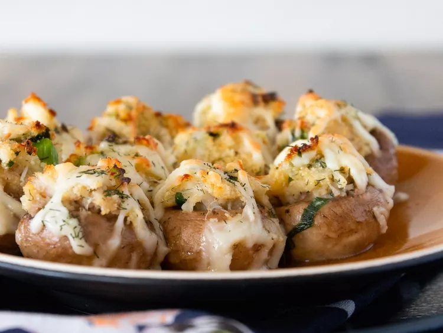

Home
Perfect Crab-stuffed Mushrooms

These little goodies are the perfect addition to your next holiday gathering or even the perfect appetizer to serve before a cozy dinner at home.
Everyone will be dazzled by every delicious bite (they won't be able to keep their hands off of them!) You can smile while you think of how easy they were to toss together! And the best part - I usually end up with leftover stuffing, which freezes beautifully until the next carry-in!
Ingredients
- 2 tablespoons butter
- 2 tablespoon minced onion
- 2 cup cooked crabmeat, finally chopped/li>
- 1/cup dryn bread crumbs
- 1/2 cup shredded Monterey jack cheese
- 1 egg,Beaten
- 1 teaspoon lemon juice
- 1/2 teaspoon dried dill weed/li>
- 1/2 cup buuter, melted
- 2 pounds fresh button mushrooms, stems removed
- 1/2 cup dry white wine/li>
>
Steps:
- step1:
Preheat oven to 400 degrees F (200 degrees C).
- Step:2
Melt 2 tablespoons butter in a skillet; cook and stir green onion until softened, about 2 minutes. Transfer green onion to a bowl. Stir in crabmeat, bread crumbs, 1/4 cup Monterey Jack cheese, egg, lemon juice, and dill weed until well mixed.
- Step3:
Pour 1/2 cup melted butter in a 9x13-inch baking dish; turn mushroom caps in butter to coat. Fill mushroom caps with the crab mixture and sprinkle with remaining 1/2 cup Monterey Jack cheese. Pour white wine into baking dish.
- Step:
Pour 1/2 cup melted butter in a 9x13-inch baking dish; turn mushroom caps in butter to coat. Fill mushroom caps with the crab mixture and sprinkle with remaining 1/2 cup Monterey Jack cheese. Pour white wine into baking dish.